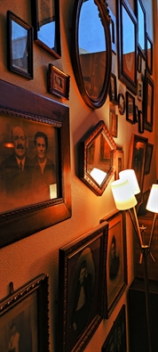
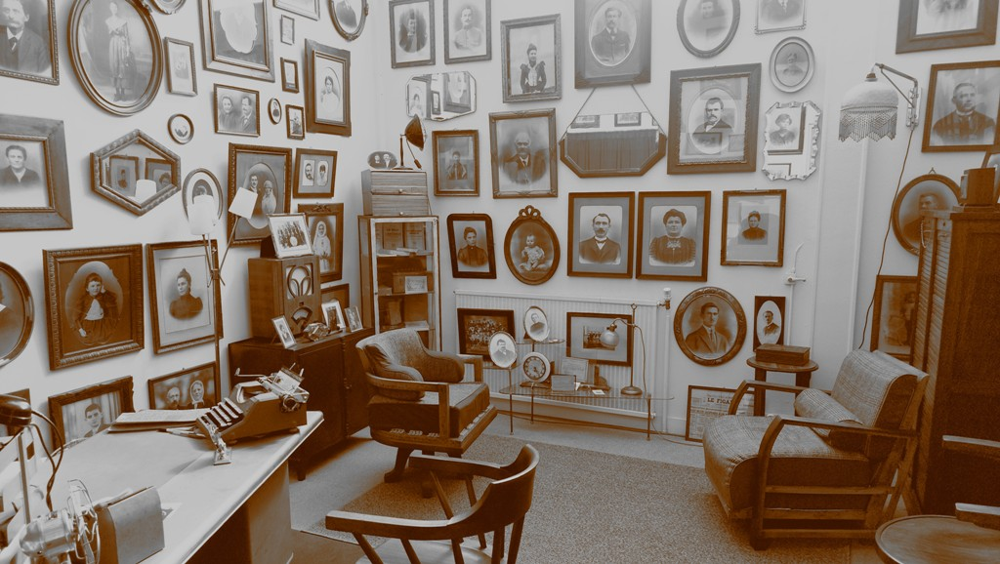

LE CABINET
Le Cabinet d’Hypnose, parenthèse spatiale ou le temps est repensé, l'approche langagière singulière qu'est la communication ERICKSONIENNE est structurée sur la forme et sur le rythme inconscient.
C'est un lieu de transition où la parole ne cherche pas à convaincre, mais à ouvrir des espaces d'intégrations.
Cette pratique s’inscrit au travers une approche clinique, où les mots, les silences et la manière de dire vont devenir des leviers thérapeutiques à part entière.
Le Cabinet d'Hypnose est avant tout un lieu d’élaboration conjointe où ce langage peut se déplacer, se nuancer, se réorganiser, afin de laisser émerger de nouvelles perspectives et de nouveaux choix.
Ici la suggestion devient un levier de transformation au théâtre de la résolution, un interstice psychique.
C'est un lieu de transition où la parole ne cherche pas à convaincre, mais à ouvrir des espaces d'intégrations.
Cette pratique s’inscrit au travers une approche clinique, où les mots, les silences et la manière de dire vont devenir des leviers thérapeutiques à part entière.
Le Cabinet d'Hypnose est avant tout un lieu d’élaboration conjointe où ce langage peut se déplacer, se nuancer, se réorganiser, afin de laisser émerger de nouvelles perspectives et de nouveaux choix.
Ici la suggestion devient un levier de transformation au théâtre de la résolution, un interstice psychique.

Un espace dédié hors du dictat du temps présent, initiant l'imaginaire, la créativité du changement dans l'instanté de l'expérience : "un dépose minute", "une saisie immédiate".
